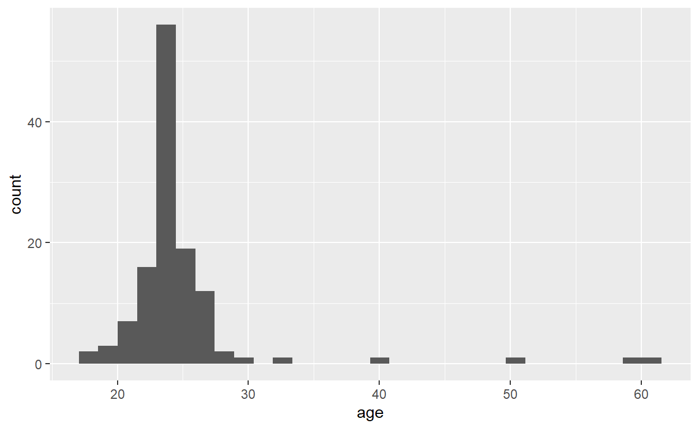

In these exercises, we will work with the dataset from Tal-Or et al. (2010) which is preloaded and named Tal.Or
Tal-Or et al. (2010) examined the presumed effect of the media in two experimental studies. These data are from study 2.
Abstract: According to the influence of presumed media influence hypothesis, people estimate the potential effects of media on other people and change their attitudes or behaviors as a consequence. In recent years, many studies offered some support for this idea. However, a central limitation of these studies is that all of them utilized correlational methodology and thus do not offer a valid way to infer causality. The current research examined the causal direction in the influence of presumed media influence using experimental methodology. In Study 2,perceptions regarding the influence of a news story about an expected shortage in sugar were manipulated indirectly, by manipulating the perceived exposure to the news story,and behavioral intentions resulting from the story were consequently measured.
Experimental hypothesis: Participants will be more likely to react to the sugar shortage report when they are manipulated to think that others are more affected by the report.
Procedure: Experimenters explained that participants were to answer a short survey about media impact on purchase decisions and handed out randomly two versions of a two page pamphlet. In the first page, participants were asked to read a newspaper article about an expected shortage in sugar that is about to be published in the coming days. In the second page, the participants were asked to answer three questionnaires, one measuring reactions to the publication of the shortage in sugar story, the second served as a manipulation check, and the final set of questions were demographic. After respondents completed the questionnaires, they were debriefed as to the true object of the study and about the fact that the information they received about shortage in sugar was false.
The results are data frame with 123 observations on the following 6 variables:
cond: Experimental Condition: 0 low media importance, 1 high media importance. (Importance was manipulated by telling participants that the story would be published either on the front page of a newspaper or inside the economic supplement of the newspaper).
pmi: Presumed media influence (This was a manipulation check to see that participants felt that publishing the article would affect people’s behaviour and that responses were not different based on age or gender of participants. The value is the mean score of response to two questions.)
import: Importance of the issue (Similar to the pmi variables, a check was also done to see that participants agreed that the issue is important and that responses were not different based on age or gender of participants. “The article is about an important topic concerning the global economic crisis” and “the decision to publish the article on the front/back page is an indication of the topic’s importance”.)
reaction: Subjects rated agreement about possible reactions to the story. (The score is the mean of 4 items: “publishing the article might affect my decisions about buying sugar, “I will buy sugar next time I go to the store,” “I will buy more sugar than usual next time I go to the store,” and “I will try to reduce my sugar consumption.”).
gender: 1 = male, 2 = female
age: a numeric vector
Consider the following questions in relation to the scenario:
## `stat_bin()` using `bins = 30`. Pick better value with `binwidth`.
\[\bar{x} = \frac{1}{n} \sum_{i=1}^{n}x_{i}\]
## `stat_bin()` using `bins = 30`. Pick better value with `binwidth`.##
## Call:
## lm(formula = Tal.Or$reaction ~ Tal.Or$pmi)
##
## Residuals:
## Min 1Q Median 3Q Max
## -2.96634 -0.94244 0.04561 1.03964 3.10534
##
## Coefficients:
## Estimate Std. Error t value Pr(>|t|)
## (Intercept) 0.54910 0.54920 1.000 0.319
## Tal.Or$pmi 0.52389 0.09544 5.489 2.26e-07 ***
## ---
## Signif. codes: 0 '***' 0.001 '**' 0.01 '*' 0.05 '.' 0.1 ' ' 1
##
## Residual standard error: 1.393 on 121 degrees of freedom
## Multiple R-squared: 0.1994, Adjusted R-squared: 0.1927
## F-statistic: 30.13 on 1 and 121 DF, p-value: 2.263e-07